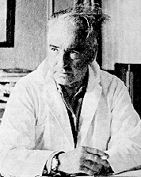
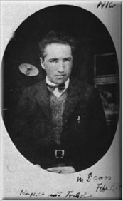

|
Wilhelm Reich "Man's right to know, to learn, to inquire, to make bona fide errors, to investigate human emotions must, by all means, be safe, if the word FREEDOM should ever be more than an empty political slogan." So spoke Wilhelm Reich, right before the U.S. government burned all of his books and papers, destroyed his orgone accumulators, and threw him in prison in 1957. Ah the '50s. The Age of McCarthyism. Decade of poodle skirts, sock hops, and toasty evenings around the book-burning bonfire. But Wilhelm Reich's persecutions were not the result of Communist activities. In fact, the FBI had given him a clean bill of health in this arena (after a mere 7 years investigation). Instead the trouble began when some journalist named Mildred Brandy got her knickers in a twist over Reich's unusual theories -- one of these being the notion that every individual should have a healthy satisfying sex life. In the '50s. Imagine! Additionally he had this idea that a lack of sex could inhibit the flow of something called "orgone" -- Reich's word for life force (before "chi" and "prana" became trendy). And he had built a machine called the Orgone Box, or orgone accumulator to restore those who were overly depleted. So Mildred got very busy and wrote nasty articles about Wilhelm ("The New Cult of Sex & Anarchy", "The Strange Case of Wilhelm Reich") that caught the attention of the Powers That Be. As a result, in 1954, through the auspices of the FDA, The Powers That Be informed Reich that he had no right to blabber on about "orgone" or to build contraptions to accumulate said orgone for human use. Furthermore, they stipulated, it would not be enough to cease making health-related claims about orgone and orgone boxes -- he would actually have to destroy every last trace of the damnable things, including all packaging labels that bore the word "orgone". When the FDA discovered that (horrors!) one of Reich's associates still possessed an orgone box and had tried to take it across states lines, Reich himself was accused of criminal contempt, tried, and sentenced to two years in prison. His Foundation was fined $10,000 and a physician utilizing orgone treatments was also thrown in prison. All related books, papers, and equipment were destroyed. A beleaguered Reich died in prison on November 3, 1957 Ironically, in 1939, long before being crushed by the long arm of American justice, Wilhelm Reich had immigrated to the U.S. to escape the goose-stepping, mass mind fascism of the Nazis. A medical doctor and psychoanalyst, the Austrian born Reich had been a student of Sigmund Freud in Vienna. But he had become disillusioned with the psychoanalytic method. A lot of people weren't getting any better. Unlike most analysts, Reich was not content to sit back in his chair collecting his fee and dozing off between repetitions of "please, go on". Because Reich had grown up on a farm and had also been professionally tutored in biology, he was conscious of the natural impulses and needs of living creatures. Building on this background, he began to think about the physical nature of human beings and how they, like other creatures (especially primates) needed touch and natural sexual expressiveness. His studies of tribal people who lived close to the earth, indicated that human beings with fewer inhibitions against their natural desires had fewer psychiatric problems. Eventually his work led him to a theory of a bioelectric life force energy that flowed through all living beings. He called this energy "orgone". Sexuality was itself an expression of this life force energy. Blocking it up with social taboos and ideological nonsense could only lead to harm -- for the individual and for society. (He later wrote a paper linking sexual repression to the rise of fascism.) But coincidentally, just as Reich's ideas were coming into full bloom, so was social repression and fascism. Even Freud began to downplay sexuality in response to this pressure. Not so Reich. He just wouldn't shut up -- about orgasms, and orgone, and nice young ladies needing to get their jollies just like anyone else. He was politely excommunicated from the psychoanalytic society in Vienna. And as the Nazis were beginning to make life in Vienna less pleasant anyway, Reich left the country.
He continued his work however, seeking to find evidence of orgone/life force energy and designing ways to collect, concentrate, and direct it. Although Reich's theories about orgone are still ridiculed by many, his ideas about human sexuality and the body have had definite impact and acceptance. In fact, current physical therapy and massage techniques dealing with "body armouring" owe their origins to the work of Wilhelm Reich. Body armouring is simply the concept that pain, grief, sexual tension and other forms of stress can be stored in the body as muscle tension and even as permanent tensing or "armouring" of the muscle tissue. Anyone who's been worked over by a qualified masseuse can recall the experience of emotional release and well-being that comes as this tension is finally released. This effect, according to Reich, was simply the flow of life force energy being returned to those areas. Similarly, orgasm, especially if prefaced by a really good fuck, restored the healthy flow of life force, or orgone, throughout the body. Reich wrote that sexuality was "the center around which revolves the whole of social life as well as the inner life of the individual." No doubt Hugh Hefner would agree. Unfortunately, despite the advances of the "sexual revolution" (a movement which Reich's work helped set in motion), human sexuality is still viewed as a rather naughty subject in many so-called civilized cultures and "getting off" is usually treated as something dirty and frivolous.
Related TriviaIn 1901, four-year old Wilhelm discovered the housemaid and the coachman getting it on. He hung around to watch and listen, reportedly getting very turned on. Meanwhile, Wilhelm's nurse began playing show and tell at naptime with her young charge, letting him explore her genital area.Decades later, Beat/Hippi poet Allen Ginsberg was so impressed with the psychosexual theories of Wilhelm Reich that in 1948 he wrote Reich a letter, asking him to recommend a therapist. Ginsberg's close friend, and fellow homosexual, William S. Burroughs thought little of "genital Reichians" (most of whom believed heterosexuality was a man's natural, healthiest sexual expression). Burroughs' warned his friend, "When a man gets too straight, he's nothing but a goddamned prick." Several years later, during his time in North Africa, Burroughs was experimenting with an Orgone Box of his very own.
The Published Works of Wilhelm Reich"The Function of the Orgasm""Tension, Charge, Discharge, Relaxation" "Character Analysis" "The Mass Psychology of Fascism" "The Sexual Revolution" "The Bion" "Bion Experiments and the Cancer Problem" "The Murder of Christ" "The Cancer Biopathy" "Ether, God and Devil" "Cosmic Superimposition" "People In Trouble" "Contact With Space"
sexual energy can never become misdirected." -- Wilhelm Reich |